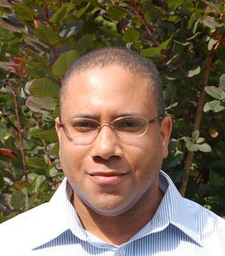

John Altidor

| School of Computer Science |
| University of Massachusetts |
| jaltidor [at] cs [dot] umass [dot] edu |
I completed my Ph.D. in Computer Science at UMass Amherst. My advisors were Yannis Smaragdakis and Jack Wileden. I am now a Senior Software Engineer at Cambridge Semantics.
Research Interests
- Programming language semantics and techniques supporting software engineering.
- Formal methods such as type systems for designing languages with correctness and runtime guarantees at compile time.
- Automated proof assistants such as Twelf.
- Language abstractions supporting modular programming and software reuse.
Projects
Subtyping with Generics
Many modern languages have support for parametric polymorphism such as Generics in Java. Parametric polymorphism enhances the readability, maintainability, and safety of programs. Subtyping promotes software reuse by allowing code to be applied to a larger set of terms. Integrating both approaches is far from trivial. For example, consider a Generic interface List<E>, where E is a type parameter, List is a parametric type (generic), and instances of E can be read from or written to instances of List<E>. Even if Dog is a subtype of Animal, it is not safe to assume that List<Dog> (a list of Dogs) is a List<Animal> (a list of Animals). Existing variance mechanisms enable greater subtyping between parametric types but can be difficult to use and suffer from various deficiencies. This project aims at providing programming language mechanisms to better support subtyping with parametric polymorphism.
Feature-Based CAD System Interoperability
Computer-aided design (CAD) systems are used to create virtual representations of physical objects (e.g. cars, planes). Interoperability of CAD systems is a major problem when enabling information integration in a collaborative engineering environment. Existing standard CAD data formats such as IGES and STEP do not preserve feature information during CAD data exchange. Hence, they do not enable the modification, extension, and ability to perform higher-level functionality on imported CAD models from other CAD systems. This project aims at enabling higher-level CAD data exchange.
- CAD Data Exchange Software Project: (www)
Publications
-
Dissertation
(Awarded 2014 Outstanding Dissertation by the School of Computer Science)
Subtyping with Generics: A Unified Approach. (pdf)
John Altidor. -
Refactoring Java Generics by Inferring Wildcards, In Practice.
(paper,
slides)
John Altidor and Yannis Smaragdakis.
29th ACM SIGPLAN Conference on Object-Oriented Programming Systems and Applications (OOPSLA 2014) -
Java Wildcards Meet Definition-Site Variance.
(paper,
slides)
John Altidor, Christoph Reichenbach, and Yannis Smaragdakis.
26th European Conference on Object-Oriented Programming (ECOOP 2012) -
Taming the Wildcards: Combining Definition-
and Use-Site Variance.
(paper,
slides)
John Altidor, Shan Shan Huang, and Yannis Smaragdakis.
ACM SIGPLAN 2011 Conference on Programming Language Design and Implementation. (PLDI 2011) -
A Programming Language Approach To Parametric
CAD Data Exchange.
(paper,
slides)
John Altidor, Jack Wileden, Jeffrey McPherson, et al.
ASME 2011 International Design Engineering Technical Conferences (IDETC 2011) -
Towards Industrial Implementation of Emerging Semantic
Technologies.
(paper)
Jay Breindel, Ian Grosse, Sundar Krishnamurty, John Altidor, et al.
ASME 2011 International Design Engineering Technical Conferences (IDETC 2011) -
Analyzing And Implementing A Feature
Mapping Approach To CAD System Interoperability.
(paper)
John Altidor, Yiwen Wang, Jack Wileden, et al.
ASME 2009 International Design Engineering Technical Conferences (IDETC 2009)
Other Documents
Teaching Experience
- Full Instructor for Programming Methodology. (www) Spring 2014.
- Co-Instructor for Programming Methodology. (www) Fall 2013.
- Instructor for Programming Language Reading and Discussion Group. (www) Spring 2012.
- REU Mentoring. Summers 2013, 2011, and 2010.
- Instructor for Honors Section of Programming Methodology. (CMPSCI 220) Fall 2009.
- Teaching Assistant for Software Development Practices. (Com S 309) Fall 2007 - Spring 2008.
Awards
- 2011 Outstanding Synthesis Award.
- 2010 Honorable Mention list for the Ford Fellowship.
- 2008 GEM Fellowship.
Professional Events Attended
Conferences and Workshops
- ACM SIGPLAN 2012 Conference on Programming Language Design and Implementation (PLDI 2012), Beijing, China, June 2012
- 26th European Conference on Object-Oriented Programming (ECOOP 2012), Beijing, China, June 2012
- 39th ACM SIGPLAN-SIGACT Symposium on Principles of Programming Languages (POPL 2012), Philadelphia, PA, January 2012
- ACM SIGPLAN 2011 Conference on Programming Language Design and Implementation (PLDI 2011), San Jose, CA, June 2011
- 2011 Federated Computing Research Conference (FCRC 2011), San Jose, CA, June 2011
- 38th ACM SIGACT-SIGPLAN Symposium on Principles of Programming Languages (POPL 2011), Austin, TX, January 2011
- 6th ACM SIGPLAN Workshop on Types in Language Design and Implementation (TLDI 2011), Austin, TX, January 2011
Summer Schools
- Summer School on Theory and Practice of Language Implementation (www), Eugene, OR, July 2009
- Summer School on Logic and Theorem Proving in Programming Languages (www), Eugene, OR, July 2008
NSF Center for e-Design IAB Meetings
Service
- Graduate Employee Organization (GEO) Steward
- Civil Rights Committee Co-Chair
- ALANAA Committee Co-Chair